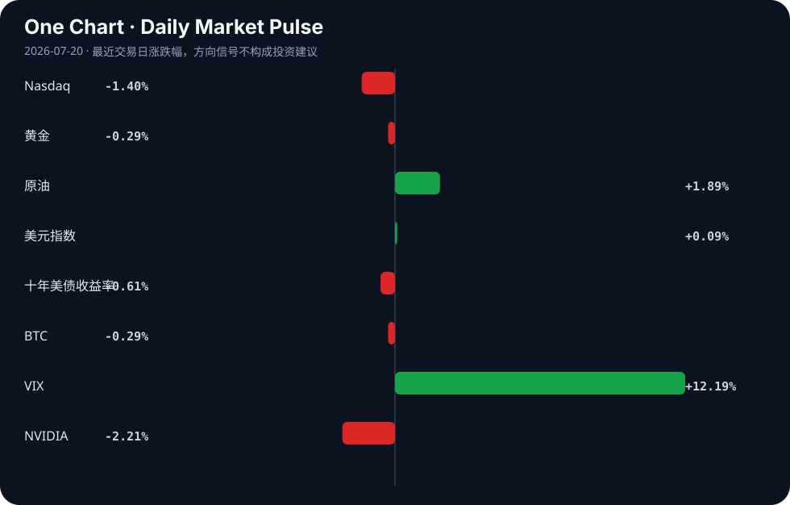

Daily Intelligence
2026-07-20｜Monday
Today’s Thesis｜今日一句话
AI的叙事正从“能力跃迁”转向“责任与落地约束”，而宏观层面的“K型分化”意味着：仅有技术突破不足以支撑估值，跨越商业化鸿沟且规避系统性资源错配的经济体才能胜出。
① Executive Summary｜30 秒
- AI：研究发现AI建议使人准确率降3倍但自信度增2倍[A22]，同时仅26%企业实现AI运营化[B22]，暴露出严重的“能力-信任”错位与落地鸿沟。
- 商业：WAIC 2026展现300款首发[A18]，但北大教授警示AGI需社会智能且不应照搬美国路线[A12]，商业化提速与学术冷思考并存。
- 宏观：穆迪警告AI繁荣导致全球经济K型分化[B15]，韩国央行警示半导体繁荣引发“荷兰病”[B13]，技术驱动的增长正加剧结构性失衡。
② AI Daily
AI信任危机：从“幻觉”到“认知抑制”
What Happened 研究显示，接受AI建议的人准确率下降3倍，但自信度却提升2倍[A22]。
Why It Matters 这揭示了AI部署中的系统性风险：AI的负面外部性不仅是产生事实错误（幻觉），更危险的是它系统性地抑制了人类的批判性思维。当高级律师或牧师使用AI起草文书或布道时[A1][A3]，这种“自信的愚昧”会直接穿透专业防线。
Second-order Effect AI信心错位 → 人类监督机制失效 → 高风险领域（法律、医疗、宗教）的系统性合规灾难 → 监管强制要求AI输出附带置信度警告。
企业AI的“运营化鸿沟”
What Happened FPT-Forrester研究指出，仅26%的企业已将AI运营化[B22]，而头部公司仍在为顶级AI模型重金买单[A9]。
Why It Matters 模型能力的狂飙（四项独立指标证实AI确有进步[A21]）与组织吸收能力之间存在巨大断层。企业购买力向顶层模型集中，但内部流程重构滞后，导致巨额IT支出变为沉没成本。
Second-order Effect 模型军备竞赛 → ROI无法兑现的企业买家疲劳 → AI算力与模型市场的寡头化 → 开源与自托管工具（如HN Summarizer[A5]）在中小企业渗透率激增。
AGI路线分歧与责任边界重置
What Happened 北大教授泼冷水称AGI离不开社会智能，不应照搬美国路线[A12]；同时学界与产业界呼吁智能走向自主亟须定义AI责任边界[A16]。
Why It Matters 这挑战了当前主导行业的“规模定律”单一路径。物理智能（把人还给人）[A10]与社会智能的引入，意味着AGI的竞争维度从算力扩展到对复杂现实世界的交互与责任对齐。
Second-order Effect 范式分歧 → 区域AI生态脱钩 → 非美国路线（如物理智能、具身智能）获得政策与资本重估 → AI责任界定成为国际贸易与准入的新壁垒。
③ Business Daily
科技：算力基建与边缘落地的分化
顶级AI模型的吸金效应[A9]与底层算力基建（如AMD与Navitas的营收趋势博弈[A2]）持续，但工业端的价值捕获正转向边缘计算。研华等工业AI与边缘计算企业股价稳健[B3]，表明市场开始奖励能解决物理世界数字化落地的基础设施，而非仅停留在云端模型。
能源：AI的物理底座与地缘溢价
AI对电力的无限渴求正催生新路线，全球首创AI赋能核能技术在WAIC发布[A20]。然而，地缘政治正对冲技术红利：以色列对伊朗的军事行动震动原油市场[B5]，推高传统能源成本。AI的扩张高度依赖廉价且稳定的基载电力，地缘溢价正在侵蚀算力的经济可行性。
制造：半导体繁荣的“荷兰病”阴影
波音寻求提高737 MAX产量[B19]，显示传统高端制造需求强劲，但韩国央行发出警告：半导体繁荣正引发荷兰病风险[B13]。资本与人才向AI芯片领域过度倾斜，可能抽干传统制造业的血液，导致经济体内部的结构性空心化。
④ Macro Observation｜机制分析
世界正在发生什么？ AI繁荣正将全球经济撕裂为K型增长路径[B15]，印度超越日本成为第四大经济体[B4]，而以半导体为核心的国家面临荷兰病警告[B13]。
为什么发生？ [事实] 穆迪确认AI带来的增长极不均衡[B15]；[事实] 韩国央行确认半导体抽干其他产业资源[B13]。[推断] AI的资本密集与技术密集属性，使得回报极度向资本与高技能劳动力集中，传统产业与中低技能劳动力被加速边缘化，形成宏观K型分化。
资本如何流动？ [事实] 离岸人民币市场扩张[B1]，外汇风险成为董事会议题[B11]。[推断] 资本正从受地缘与高息压力的传统资产，流向AI算力基建与避险资产。同时，去美元化与区域货币结算（如人民币）的资本分流正在静默加速。
接下来关注什么？ 关注“反身性断裂”：若半导体出口国的汇率与资产价格因荷兰病预期而承压，将反身性削弱其国内AI投资能力；同时，欧洲央行利率决议与全球闪速PMI[B20]将验证K型分化是否已蔓延至服务业。
⑤ Signal Dashboard
| 指标 | 最新值 | 今日 | 信号 |
|---|---|---|---|
| Nasdaq | 25,520.24 | ↓ -1.40% | 风险偏好降温 |
| 黄金 | 4,001.00 | ↓ -0.29% | 中性 |
| 原油 | 84.05 | ↑ +1.89% | 通胀压力上升 |
| 美元指数 | 100.84 | ↑ +0.09% | 中性 |
| 十年美债收益率 | 4.54 | ↓ -0.61% | 利好久期资产 |
| BTC | 64,606.09 | ↓ -0.29% | 中性 |
| VIX | 18.77 | ↑ +12.19% | 避险升温 |
| NVIDIA | 202.81 | ↓ -2.21% | 风险偏好降温 |
⑥ Deep Insight
主题：AI时代的“荷兰病”：当半导体繁荣抽干实体经济
韩国央行近日发出警告，半导体繁荣正让该国面临荷兰病风险[B13]。这并非一则寻常的产业预警，而是揭示了AI宏观经济学中最易被忽略的致命机制：技术革命的红利分配并非自然普惠，反而可能通过资源吸积效应，对出口国的实体经济造成系统性绞杀。
传统荷兰病指的是自然资源出口激增导致本币升值、制造业衰退。在AI时代，这种病发生了变异：核心“资源”变成了算力与半导体。当全球资本疯狂涌入AI芯片[A2][A9]，半导体出口国（如韩国）的贸易条件改善，汇率承压上行，其国内资本与顶尖人才会不可逆地从传统制造、服务业流向AI相关领域。这种抽离不仅推高了其他产业的要素成本，更削弱了经济体的抗冲击韧性。穆迪所警告的K型分化[B15]，在国家内部同样适用——AI部门高歌猛进，非AI部门缓慢失血。
更深的反身性在于能源与通胀的反馈循环。AI算力是极其耗电的物理过程，WAIC上发布的AI赋能核能技术[A20]恰恰反证了能源瓶颈的紧迫性。与此同时，地缘冲突（如以色列对伊朗的军事行动）推高原油价格[B5]，传统能源成本的上升直接抬高了算力的运营成本。此时，半导体出口国面临双重挤压：内部，非AI产业因荷兰病而萎缩，无法提供足够的内需缓冲；外部，地缘溢价侵蚀了AI算力的经济回报。若本币因半导体顺差而升值，传统出口将彻底失去竞争力。
这给所有押注单一AI硬件出口的经济体敲响了警钟。将半导体视为新时代的石油，固然是正确的叙事，但若缺乏内需的防火墙与产业结构的对冲，这种繁荣本身就是脆弱的。当资本意识到AI落地率仅26%[B22]、巨额算力投资无法转化为全要素生产率时，半导体繁荣的预期将逆转，荷兰病将迅速从隐性变为显性崩溃。
反方观点：AI将迅速实现全行业降本增效，半导体繁荣带来的财富溢出足以补贴传统产业，且AI赋能核能[A20]将彻底解决能源约束，荷兰病在AI时代不成立。
证伪条件：未来2-3年内，半导体出口国的非AI制造业PMI持续处于收缩区间（50以下），且其国内CPI与核心PPI出现长期且严重的剪刀差（要素成本远高于消费端承受力）。
⑦ Tomorrow Watch
1. 欧洲央行利率决议公布及拉加德讲话[B20]。
2. Alphabet、特斯拉、英特尔财报发布，验证AI基建支出与终端需求[B20]。
3. 全球主要经济体7月闪速PMI数据发布[B20]。
4. 印度Adani Green及UltraTech Cement等核心企业财报，验证第四大经济体增长成色[B4][B12]。
5. 以色列-伊朗局势对原油（84.05美元）及加密货币波动率的持续传导[B5]。
⑧ One Chart

VIX飙升12.19%与纳斯达克下跌1.40%同步发生，而原油逆势上涨1.89%。这组数据呈现出典型的地缘风险溢价与科技股承压的相关性，但需注意，地缘事件引发的资金再平衡并不必然构成科技股下跌的直接因果，中间传导机制受宏观流动性预期调节。⑨ Quote of the Day
“The essence of strategy is choosing what not to do.”
— Michael Porter
中文理解：战略的本质不是做更多事，而是清楚地决定哪些事不做。
Why it matters today：这句话不是装饰，而是今天观察 AI、商业和宏观变化时的一个思考框架：先看机制，再看价格；先看约束，再看叙事。
⑩ Action Items｜今天值得思考什么
1. 追踪韩国及类似半导体出口国的制造业PMI与汇率偏离度，验证荷兰病信号[B13]。
2. 验证企业AI运营化率（26%）与科技巨头财报中AI基建资本开支回报率的对应关系[B22][B20]。
3. 比较顶级闭源模型支出[A9]与工业边缘计算[B3]的增速差，判断算力价值链的利润转移方向。
4. 关注AI赋能核能[A20]与地缘冲突推升油价[B5]之间的对冲机制，评估算力长期成本曲线。
5. 思考在AI建议使人“低准确高自信”[A22]的背景下，组织内部应如何重构人机审核流程以防止系统性合规失败。
信息边界
本简报基于2026年7月19日及之前的公开新闻聚合源与市场数据。市场数值（Nasdaq、黄金等）反映最近交易日收盘或特定时点状态。新闻来源多为二手聚合，部分推断基于已知事实的逻辑延伸，重要判断请务必回溯原文验证。未覆盖未提供材料外的突发事实。
Sources
AI
- A1：AI should have senior lawyers sharpening their hunting spears — Hacker News · AI
- A2：Advanced Micro Devices vs. Navitas Semiconductor: Here's What The Quarterly Revenue Trends of These Artificial Intelligence Companies Reveal to Investors - The Motley Fool — Google News · AI
- A3：Pastors Using AI to Help Write Sermons Grapple with Where to Draw the Line — Hacker News · AI
- A5：Show HN: A self-hosted AI that turns Hacker News into a daily briefing — Hacker News · AI
- A9：Meet The Companies Shelling Out for Top AI Models — Hacker News · AI
- A10：通过聚合破除AI 幻觉，物理智能要“把人还给人”|讲堂视频 - 新浪网 — Google News · AI 中文
- A12：北大教授给“AI神话”泼冷水：AGI离不开社会智能，不用照搬美国技术路线 - 手机新浪网 — Google News · AI 中文
- A16：智能走向自主亟须定义AI责任边界 - 手机新浪网 — Google News · AI 中文
- A18：300款全球首发！2026世界人工智能大会亮点全揭秘 - 手机新浪网 — Google News · AI 中文
- A20：AI赋能核能，全球首创技术路线在WAIC2026上发布 - 新浪网 — Google News · AI 中文
- A21：Is AI Progress Real? Four Independent Metrics Show It — Hacker News · AI
- A22：AI advice made people 3x less accurate but 2x confident, researchers found — Hacker News · AI
Business & Macro
- B1：China expands offshore RMB market - Borneo Bulletin — Google News · Markets Policy
- B3：Advantech stock trades steadily as industrial AI and edge computing support long term growth - ad-hoc-news.de — Google News · Technology Business
- B4：India Becomes World’s Fourth-Largest Economy, Surpasses Japan in 2026 GDP Rankings - ascendants.in — Google News · Global Economy
- B5：Israel’s Iran military campaign rattles oil markets and sends crypto volatility surging - Crypto Briefing — Google News · Markets Policy
- B11：FX Risk a “Boardroom Issue” for Corporates: Report - The Full FX — Google News · Markets Policy
- B12：Stocks in Focus: Adani Green, UltraTech Cement and 8 Other Stocks Announcing Results Next Week - Trade Brains — Google News · Technology Business
- B13：Bank of Korea Warns Semiconductor Boom Risks 'Dutch Disease' - 조선일보 — Google News · Global Economy
- B15：AI Boom Splits Global Economy Into 'K-Shaped' Growth Path, Says Moody's Analytics - BW Businessworld — Google News · Global Economy
- B19：Boeing Eyes 737 MAX Production Boost - Devdiscourse — Google News · Technology Business
- B20：Week Ahead: ECB Interest Rate Decision Looms; Alphabet, Tesla, Intel Earnings Debut; Global Flash PMIs Revealed - TradingKey — Google News · Markets Policy
- B22：Only 26% of enterprises have operationalized AI, FPT-Forrester study finds - MarketScale — Google News · Technology Business